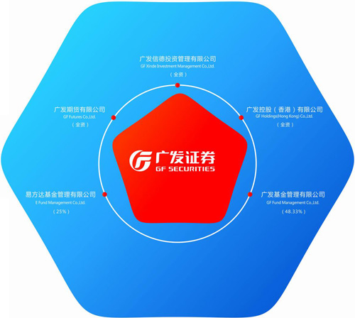

Established in 1993, GF Futures Co., Ltd is a wholly-owned subsidiary of GF Securities with registered capital of RMB 1.1 billion. The company is based in Guangzhou, and has a subsidiary in Hong Kong with local branches in major cities. GF Futures primarily engages in Pearl River Delta, covers large cities, and has built an international network of derivatives business in Hong Kong as the center. GF Future is the strongest in capital with the largest amount of registered capital among futures companies.
GF Futures operates in brokerage of commodity futures, brokerage of financial futures, and consultancy on futures investment. Its subsidiary in Hong Kong serves as broker of derivatives on commodity futures and options, indexes, foreign exchange, and interest rate products in Hong Kong and overseas market.

■ GF Holdings(Hong Kong) Co.,Ltd.
Established in 2006, GF Securities (Hong Kong) Brokerage Limited (“GF Securities (HK)”), with a registered capital of HKD 160 million, is a wholly-owned subsidiary of GF Holdings (Hong Kong) Corporation Limited. GF Securities (HK) is a corporation licensed by the Securities and Futures Commission of Hong Kong (“SFC”) to carry on the regulated activities of Type 1 (Dealing in Securities) and Type 4 (Advising on Securities) under the Securities and Futures Ordinance. (CE Number: AOB364)
GF Securities (HK) is committed to serving GF’s clients through quality and innovative products and services. GF believe the key to delivering world class services lies within GF’s team of employees with superior experience and professionalism as well as GF’s comprehensive business scope including dealing, settlement, credit risk, customer services and research. GF’s clients include institutional, corporate, high-net-worth as well as individual investors.
Introduction of Company Business
GF’s products and services include:
- Local and overseas securities dealing
- Securities margin financing
- Stock placement and public offering
- Advising on securities trading (company research, analysis and advisory)
Under GF Holdings(Hong Kong) Co.,Ltd, there are GF’s subsidiaries:
GF Securities (Hong Kong) Brokerage Limited, GF Holdings (Hong Kong) Corporation Limited, GF Asset Management (Hong Kong) Limited, and GF Investments (Hong Kong) Company Limited.
■ GF Xinde Investment Management Co.,Ltd.
Established in 2008, GF Xinde Investment Management Co.,Ltd, with a registered capital RMB 1.5 billion, is a wholly-owned subsidiary of GF Securities.
GF Xinde Investment Management has a deep understanding in China’s capital market with substantial resources in the industry. It supports clients with capital, and shares advanced management experience to help them establish relationship with government authorities across the country. Besides, GF assists in strategy development, management improvement, capital structure optimization, IPO preparation, investment and M&A opportunities, business and technology cooperation, and resource integration to enhance clients’ investment value.
■ GF Fund Management Co.,Ltd.
Established in 2003, GF Fund Management Co.,Ltd, with a registered capital RMB 120 million, is a leading asset management firm in Greater China. The company offers all major asset classes for private clients, financial intermediaries and institutional investors around the word. GF Securities controls 48.33% of the company as the largest shareholder.
AUM(Asset Under Management) of GF Fund Management has ranked in the top ten for six consecutive years in China. As of December 31, 2011, the company manages 21 open funds, a number of enterprise annuities, customized asset management plans and social security fund portfolios. Total shares of public funds amounted to 112.195 billion shares, with scale of RMB 98.38 billion ranked as the fifth in domestic market.
Currently, the company is one of the few fund management companies in China with a full range of licenses. GF Fund Management has a wholly-owned subsidiary, GF International Asset Management Co., Ltd, in Hong Kong.
■ E Fund Management Co.,Ltd.
Established in April 2001, E Fund Management Co., Ltd. (E Fund), with a registered capital RMB 120 million, is a 25% owned subsidiary of GF Securities. GF Security is one of the two biggest shareholders of E Fund Management.
E Fund has set branches in Beijing, Guangzhou, Shanghai, Nanjing and Chengdu.
It is the second largest asset manager in China with assets under management exceeding RMB 180 billion, as of 31 Dec 2011. In the space of just ten years, E Fund has grown tremendously and ascended to the top industry performance rankings due to GF’s trustworthy, disciplined management style, value investment philosophy and fundamental research driven investment approach. E Fund has received numerous industry awards and accolades in recent years. GF have constantly been part of the Morningstar Best Fund Manager list; GF have also won the most golden Bull award (for being the best fund manager) from China Securities Journal - the dominant domestic securities publication; and GF have been ranked as the country's top manager for overall investment capability and performance of open-end and closed-end funds over the past three years.
Contact Us: qfii@gf.com.cn